Interactive Architecture Maps
Click any diagram card below to explore its corresponding topic and view the code walkthroughs.
Redis Pub/Sub vs Kafka Log
Compare dynamic real-time memory channels against append-only immutable persistent commit logs.

Offline Consumer Offset Replay
Trace how offline services reconnect and automatically catch up on missed records using log offsets.

Event Fan-Out Architecture
See how a single order placed event fans out concurrently to notification, payment, and analytics nodes.

Distributed System Topology
Full end-to-end food delivery dispatch architecture using API gateways, Kafka, and microservices.
